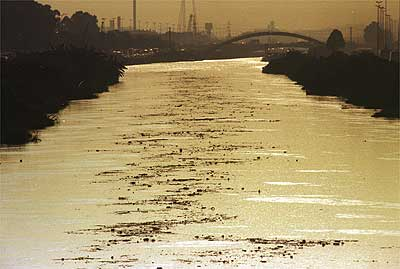

Poluição
Os rios trazem um enorme benefício para a sociedade, e possuem grande importância para a organização da geografia do local. Porém, nas grandes cidades, esses rios estão sofrendo consequências negativas, pois a cada dia é despejado mais lixo nas águas das cidades, e esses rios acabam se tornando esgotos a céu aberto. Esses rios, que em muitos casos são tratados como subprodutos da sociedade urbana, são utilizados como depósito de lixo.
Os principais fatores que levam à poluição dos rios são:
- Esgotos extremamente sujos que caem diretamente nos rios;
- Lixos urbanos, como as garrafas pet, lixo orgânico, detergentes, móveis, entre outros;
- Falta de conscientização da população.
Os esgotos que não são tratados possuem restos de alimento, fezes humanas, produtos de limpeza, entre outros, e são diretamente jogados aos rios, fazendo com que fique cada vez mais difícil a recuperação das águas poluídas.